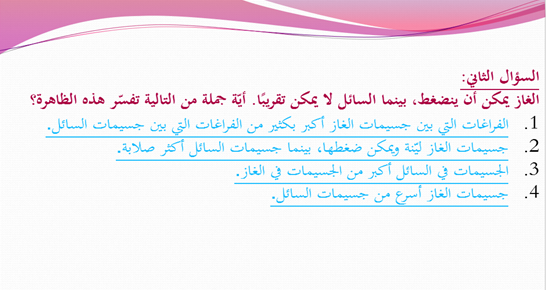
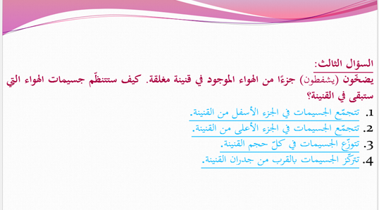

السؤال 1
أيّ جملة صحيحة بالنسبة لجسيمات الأوكسجين في الحالة السائلة مقارنة بالحالة الغازية؟

أيّ جملة صحيحة بالنسبة لجسيمات الأوكسجين في الحالة السائلة مقارنة بالحالة الغازية؟
الغاز يمكن ضغطه بينما السائل لا يمكن ضغطه تقريبًا. ما السبب؟

بعد شفط جزء من الهواء داخل قنينة مغلقة، كيف تنتظم الجسيمات المتبقية؟
